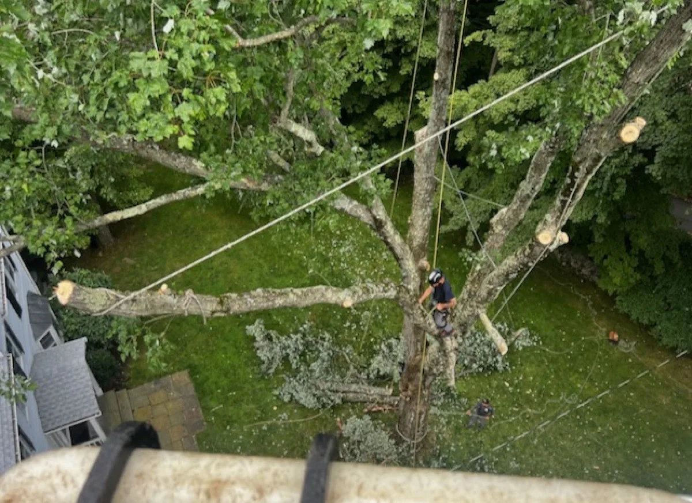
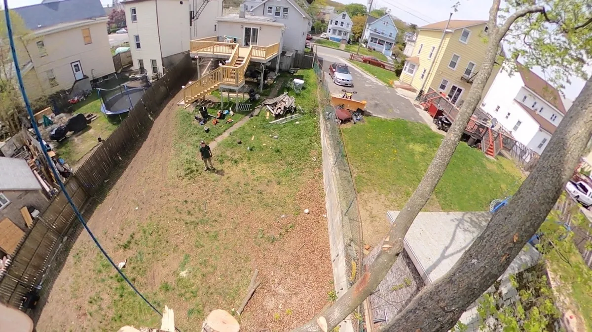
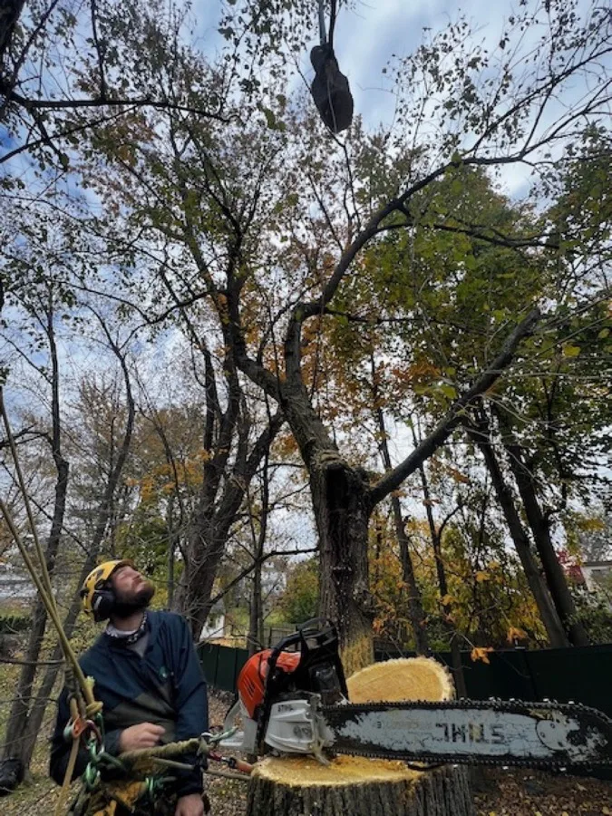
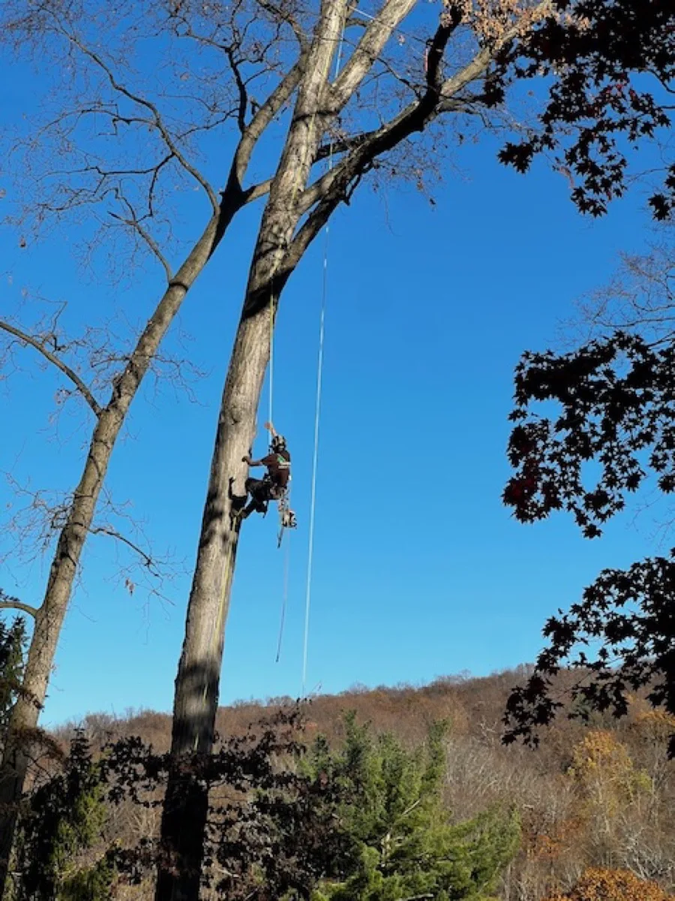
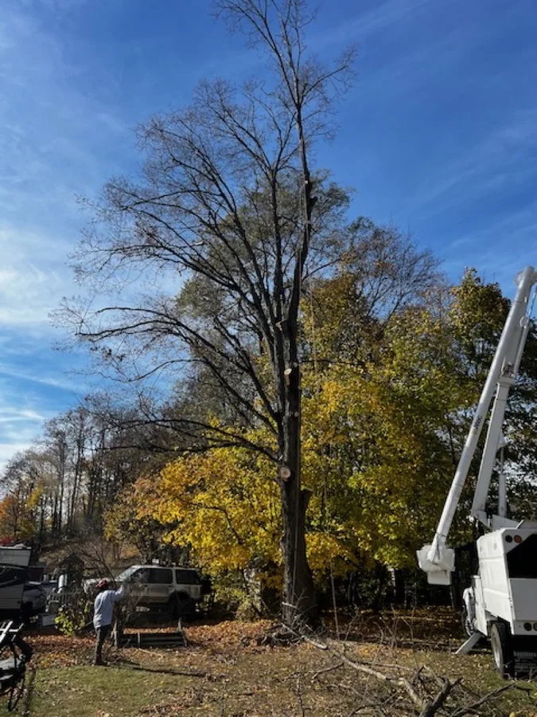
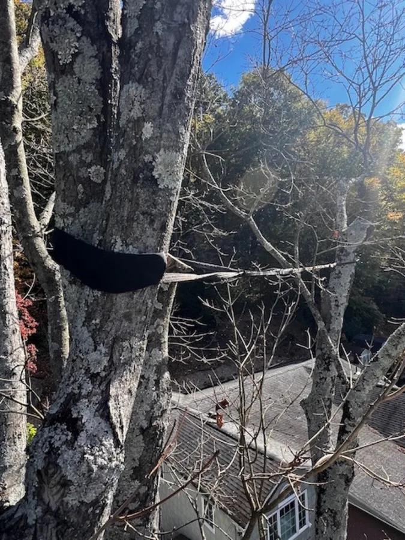
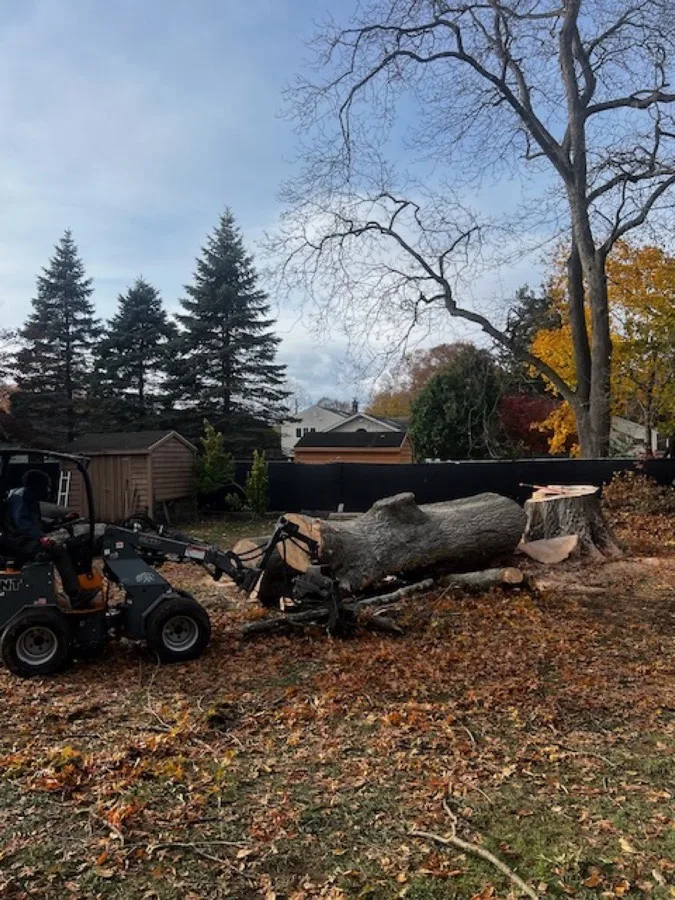
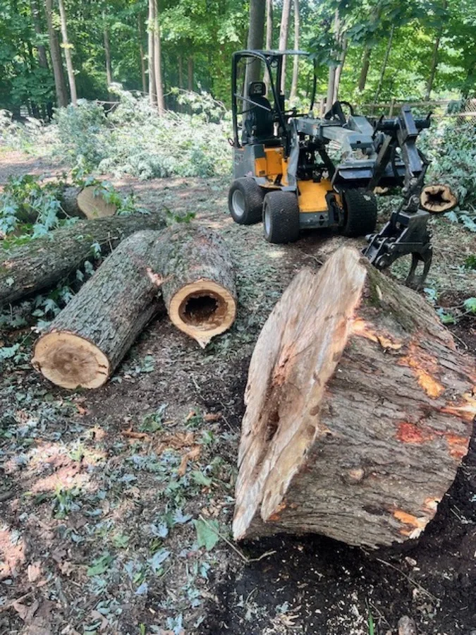

Safe, Expert Tree Removal You Can Trust
When a tree on your property becomes hazardous, diseased, or simply needs to go, you need a crew that handles the job safely and completely. Second Nature Tree Service has been removing trees across Peekskill, Yorktown, Cortlandt Manor, and the greater Northern Westchester area for over a decade. As a locally owned company with both owners on every job, we bring personal accountability and professional-grade equipment to every removal.
Whether it is a dead ash tree threatening your roof, a massive oak that has outgrown its space, or storm-damaged limbs hanging over your driveway, we have the expertise and the tools to take it down safely, clean up thoroughly, and leave your property looking better than we found it.








When Does a Tree Need to Be Removed?
- Dead or dying trees — Standing dead trees are unpredictable and can fall without warning, damaging property or injuring people.
- Storm-damaged trees — Cracked trunks, split crotches, and hanging branches after severe weather create immediate hazards.
- Dangerous lean — Trees leaning toward your home, garage, power lines, or walkways may need removal before they fail.
- Root damage to foundations — Invasive root systems can crack foundations, lift sidewalks, and damage underground utilities.
- Disease and infestation — Emerald ash borer, hemlock woolly adelgid, and other pests are devastating trees throughout the Hudson Valley.
- Construction and lot clearing — Building a new addition, pool, or driveway often requires removing trees in the work area.
- Overcrowding — Trees planted too close together compete for light and nutrients, weakening all of them over time.
Our Tree Removal Process
Every tree removal follows a careful, four-step process designed to protect your property and keep everyone safe:
- Free On-Site Assessment — We evaluate the tree, the surrounding area, and access for equipment. We discuss any concerns and answer your questions.
- Detailed Quote — You receive a written estimate covering the full scope of work including cleanup and haul-away. No hidden fees, no surprises.
- Safe, Controlled Removal — Our crew uses climbing gear, rigging ropes, bucket trucks, or cranes as needed. Each section is lowered carefully to prevent property damage.
- Complete Cleanup — We remove all wood, branches, and debris. When we leave, the only evidence a tree was there is the extra space in your yard.
Types of Tree Removal We Handle
Residential Tree Removal — The majority of our work involves removing trees from residential properties. Backyard maples, front-yard oaks, dead pines along property lines — we handle them all with care for your landscaping, fences, and structures.
Large & Complex Removals — Mature hardwoods and tall pines require advanced rigging and experienced climbers. Our team routinely handles trees 80 feet and taller, even in tight spaces between homes.
Hazardous Tree Removal — Trees near power lines, leaning on structures, or severely decayed demand specialized safety protocols. We have the training, insurance, and equipment for high-risk situations.
Crane-Assisted Removal — For extremely large trees or difficult access, we bring in a crane to lift sections straight out, reducing risk and often completing the job faster.
Emergency Removal — When storms bring down trees, we respond quickly to restore safety. Learn about our emergency services.
What Drives Tree Removal Cost
Tree removal is priced per job, not off a chart — the same-height tree can cost very differently depending on what's around it. We give free on-site estimates, but here's an honest breakdown of what moves the number, biggest swings first, so you know what to expect before we arrive.
Want a tighter estimate over the phone? Have these ready: roughly how tall (compare to your two-story house), trunk width at chest height, how close to the house/lines, and whether a truck can reach the backyard. That's usually enough for a solid ballpark before we ever come out.
Get Your Free Tree Removal Estimate
Serving Northern Westchester & Putnam County
Tree Removal in Peekskill, NY
Our home base. We know every neighborhood from downtown to the waterfront. Silver maples, Norway maples, and aging white oaks are the most common species we remove here.
Tree Removal in Yorktown Heights, NY
Large wooded lots with mature red oaks, sugar maples, and hickories. Many Yorktown properties need removal when aging hardwoods develop structural problems.
Tree Removal in Cortlandt Manor, NY
From suburban subdivisions to heavily wooded parcels near Bear Mountain. Hemlock woolly adelgid is a growing concern causing hemlock decline throughout Cortlandt.
Tree Removal in Briarcliff Manor, NY
Established properties with mature canopies. We are familiar with the village tree preservation regulations and can guide you through the permitting process.
Tree Removal in Chappaqua, NY
Premium residential lots with towering hardwoods. Homeowners here invest in their landscapes, and careful removal around high-value landscaping is essential.
Tree Removal in Garrison, NY
Putnam County properties with steep terrain, long driveways, and dense woodland. Our equipment and crew are well suited to the challenges of working in Garrison's rugged landscape.
Frequently Asked Questions
The biggest price driver isn't tree size — it's what's around the tree. A tree in an open yard comes down fast; the same tree over your roof or near power lines must be dismantled piece-by-piece with rigging, which is the bulk of the labor. Height/diameter, equipment access, whether a crane is needed, hazard condition, and debris/stump handling round it out. See the "What Drives Tree Removal Cost" breakdown above for the full picture, then call (914) 391-5233 for a free on-site estimate.
Permit requirements vary by municipality. Many towns in Westchester require permits for trees above a certain diameter. We advise you on local regulations during your free estimate.
Tree removal can be done year-round. Winter is often ideal for deciduous trees since they are bare and lighter. Hazardous trees should be addressed immediately regardless of season.
Most residential removals take a few hours to a full day depending on size and complexity. We provide time estimates during your free consultation.
Stump grinding is available as an add-on service. Many customers bundle it with removal for a complete result. See our stump grinding page for details.
Yes. We carry full general liability and workers compensation coverage. Licensed in Westchester (WC-32079) and Putnam (PC-50644) Counties. We provide certificates of insurance on request.
Yes. We respond to fallen trees, storm damage, and hazardous situations as quickly as possible. Call (914) 391-5233 for emergency service.
All debris is hauled away for recycling. If you want firewood, we can buck it into logs and stack it on your property at no extra charge.